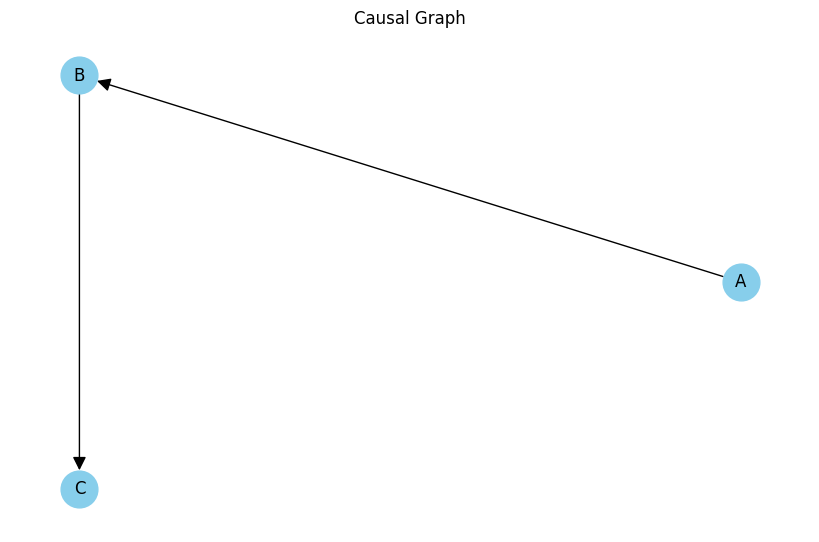
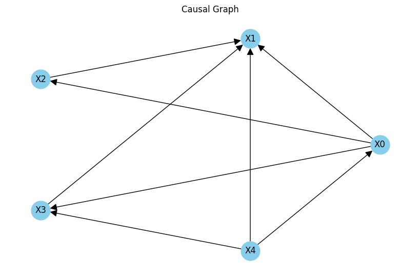
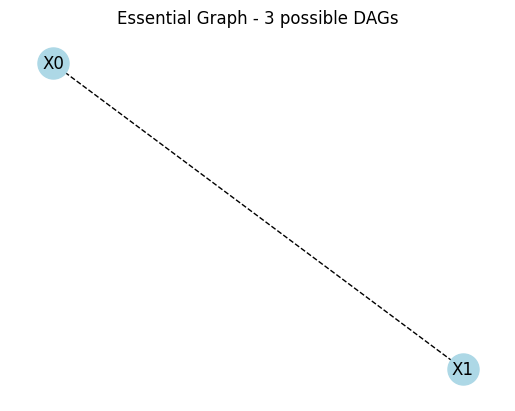
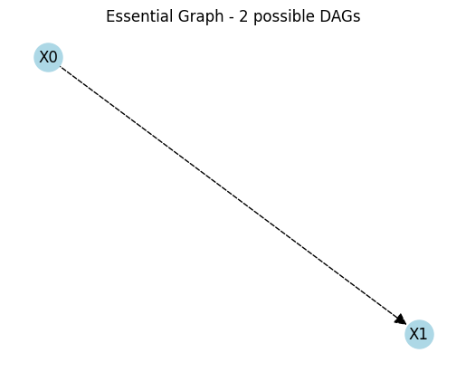
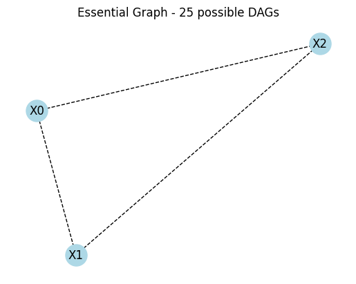

DoLearn: Causal Discovery through Interventions
Installation
Installing do-learn is easy.
pip install do-learn
Defining causal model
Let's start by instantiating a causal model and providing nodes and edges as arguments.
from do_learn import CausalGraph
nodes = ['A', 'B', 'C']
edges = [('A', 'B'), ('B', 'C')]
graph = CausalGraph(nodes,edges)
# Use the display() function to show the graph
graph.display()

We can also generate a random causal model by calling generate_dag() and providing the number of nodes and edge probability.
from do_learn import generate_dag
random_graph = generate_dag(num_nodes=5, edge_prob=.8)
random_graph.display()

Now let us sample from our first graph using the sample() function
graph.sample()
# Output: {'A': 0, 'B': 0, 'C': 0}
Since no initial values were given each variable deafults to 0.
We can carry out an intervention on a variable by calling the do() function. It returns a dictionary with 3 keys (pre, post, diff), represeting the values of each variable before and after the intervention and finally the difference between these values.
graph.do('A', 1)
# Output: {'pre': {'A': 0, 'B': 0.0, 'C': 0.0},
# 'post': {'A': 1, 'B': 1.0, 'C': 1.0},
# 'diff': {'A': {'B': 1.0, 'C': 1.0}}}
In our simple example A causes B which causes C, so when A is set to 1 the other two variables change as well.
Learning
The previous example illustrated sampling from a known causal graph and inferring the results of interventions, however in many cases we are interested in learning an unknown causal graph and using interventions to probe for causal relations.
Example 1
Let's start with the simple case of two variables X and Y. Given two variables, there exist three possible causal structures. Either X causes Y, Y causes X or X and Y are independent.
DoLearn allows us to represent these possible graphs using the EquivalenceClass class. We can plot each one of these graphs using the display_all() function or simply call display_essential_graph() to represent all graphs in one
true_graph = CausalGraph(['A','B'], [('A','B')])
possible_graphs = generate_all_dags(2)
equivalence_class = EquivalenceClass(possible_graphs)
equivalence_class.display_essential_graph()

A dashed undirected edge represent that the edge either goes from X0 to X1, from X1 to X0 or doesn't exist (making X0 and X1 independent) and thereby visualizes all three possible graphs at once.
If we slice the possible graphs to only include 2 of them we get a different essential graph. Now we see a directed dashed edge from X0 to X1, representing that the edge either X0 to X1 or doesn't exist.
equivalence_class = EquivalenceClass(possible_graphs[1:3])
equivalence_class.display_essential_graph()

When learning a causal graph we want to reduce the equivalence class of possible graphs by carrying out interventions and ruling out models that aren't consistent with our data. Hopefully with enough interventions we will end up with the true underlying structure.
Let's try learning the true graph in 3-variable setting. First we will define the true causal graph as follows:
true_graph = CausalGraph(['A','B','C'], [('A','B'),('A','C'),('B','C')])
possible_graphs = generate_all_dags(3)
equivalence_class = EquivalenceClass(possible_graphs)
equivalence_class.display_essential_graph()
